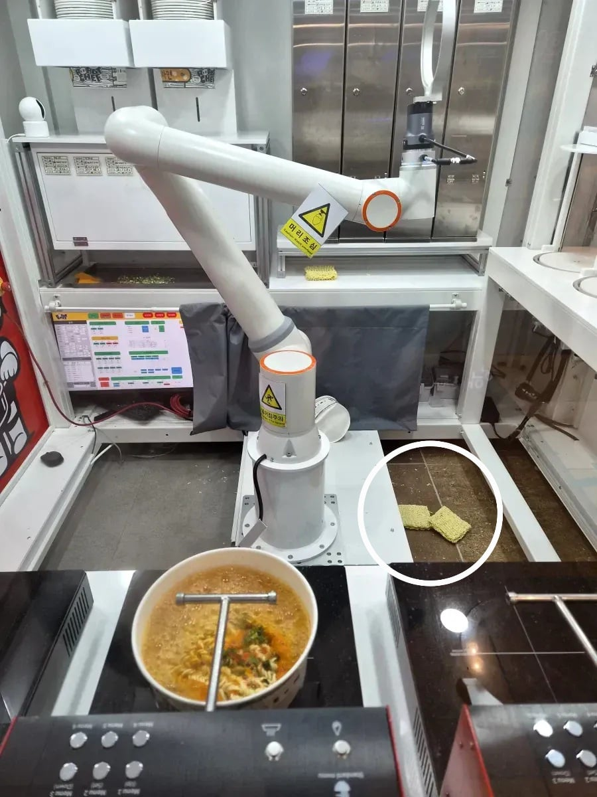
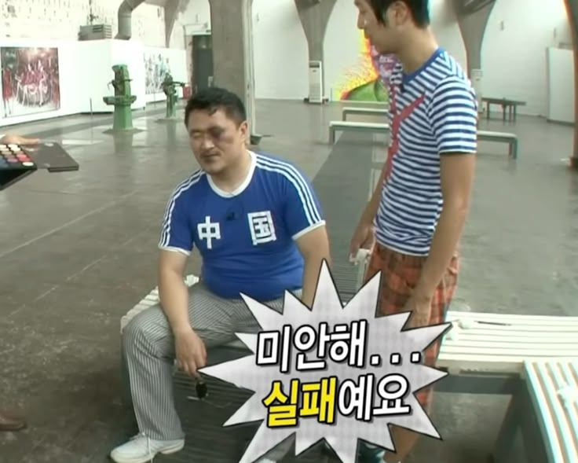

21 · 10 · 2 분 전 · 원문


수집 당시 댓글 10개
졸려요 · 17 분 전
실패 ㅋㅋㅋ 개웃기넴
유아학교 · 15 분 전
뿌뿌룰루 · 12 분 전
꽝도 있네 ㅋㅋㅋ
MrBlueSky · 12 분 전
실패까지 예외처리 해놓은게 웃기네 ㅋㅋㅋ 걍 다시해 이색히야 ㅋㅋㅋ
판타레이 · 12 분 전
실패 ㅋㅋㅋㅋㅋㅋㅋㅋㅋㅋㅋ
고고구마 · 10 분 전
실패했다실패했다실패했다실패했다실패했다
MISFITZ · 8 분 전
귀엽다
민트초코가지무침 · 4 분 전
추풍령 라면로봇을 따라잡지못했군
아호다 · 3 분 전
저런로봇은 항상 영점조절이 생명이지 ㄲㄲㄲ
김주애사진보면발기됨 · 1 분 전
실패하면 리트 박아야 하냐?
실패 ㅋㅋㅋ 개웃기넴